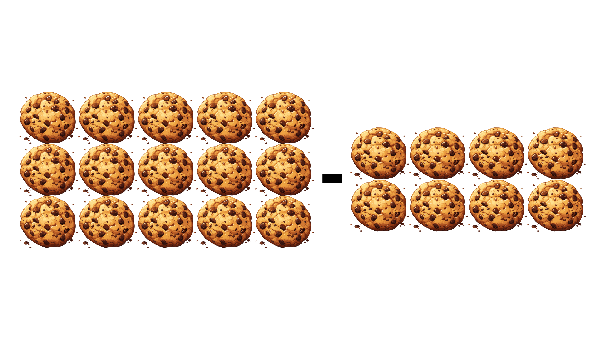

Resta de números
Restar es quitar una cantidad de otra para saber cuánto queda. ¡Es como compartir tus juguetes!
Por ejemplo, si tienes 15 galletas y te comes 8, te quedan 7 galletas. ¡Eso es restar!
Aquí hay un dibujo para ayudarte:
Ahora, intentemos restar 15 - 8:
Primero, escribe los números uno debajo del otro:
15
- 8
Ahora, resta los números:
5 - 8 no se puede, así que pedimos prestado al 1 del 15, convirtiendo 5 en 15 y 1 en 0:
15 - 8 = 7
Entonces, 15 - 8 es igual a 7
Restas divertidas
¡Aprender a restar es como resolver un acertijo! Vamos a restar números más grandes.
Sigue estos pasos para restar dos números:
- Escribe los números uno debajo del otro.
- Resta los números de derecha a izquierda.
- Si no puedes restar, pide prestado al número de la izquierda.
Por ejemplo, restemos 74 - 28:
Escribe los números uno debajo del otro:
74
-28
Ahora, resta los números:
4 - 8 no se puede, así que pedimos prestado al 7 del 74, convirtiendo 4 en 14 y 7 en 6:
14 - 8 = 6
Ahora resta las decenas:
6 - 2 = 4
¡Entonces, 74 - 28 es igual a 46!
Restar números con más de una cifra
Ahora vamos a aprender a restar números con más de una cifra. ¡Es fácil y divertido!
Cuando restamos números grandes, restamos las unidades primero y luego las decenas.
Por ejemplo, restemos 452 - 236:
452
-236
Primero, resta los números de la derecha (las unidades):
2 - 6 no se puede, así que pedimos prestado al 5 del 452, convirtiendo 2 en 12 y 5 en 4:
12 - 6 = 6
Ahora, resta los números del medio (las decenas):
4 - 3 = 1
Por último, resta los números de la izquierda (las centenas):
4 - 2 = 2
Entonces, 452 - 236 es igual a 216
¡Así de fácil!